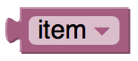
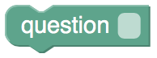
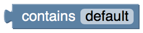
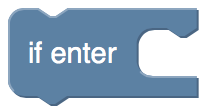

Classic Blockly Blocks

Conditional statements are central to computer programming. They make it possible to express statements like:
- If there is a path to the left, turn left.
- If score = 100, print "Well done!".
It is also possible to specify that something should happen if the condition is not true. An if block may have zero or one else sections but not more than one. An if block may haveany number of else if sections. Conditions are evaluated top to bottom until one is satisfied, or until no more conditions are left. The else section guarantees that some action is performed, even if none of the prior conditions are true. An else section may occur after any number of else if sections, including zero.
To add else if and else clauses, the user needs to click on the gear icon, which opens a new window. The user can then drag else if and else clauses into the if block, as well as reordering and removing them. When finished, the user should click on the minus sign, which closes the window. Note that the shapes of the blocks allows any number of else if subblocks to be added but only up to one else block.
For a more indepth look at if do loops, please visit Blokly's help page: Blockly Help
Repeat While... or Until...
The simplest "repeat" block runs the code in its body the specified number of times. "Repeat while" loops repeat their bodies while some condition is true. Repeat-until loops are similar except that they repeat their bodies until some condition is true.
For a more indepth look at repeat loops, please visit Blokly's help page: Blockly Help
MessageThe message block is used to input a string. A string is a collection of characters (abc,123,@#$).
For a more indepth look at strings, please visit the Blockly recomended wikipedia page: Blockly Help
PrintThe print block causes the input value to be displayed in a pop-up window, If the code is exported as JavaScript, Python, or Dart, it will be printed to the console (screen). In no case is it sent to the printer, as the name might suggest.
For a more indepth look at print, please visit the Blockly help page: Blockly Help
Logical BooleanA single block, with a dropdown specifying either true or false, used to get a boolean value.
For a more indepth look at logical booleans, please visit the Blockly help page: Blockly Help
Logical ComparisonThere are six comparison operators. Each takes two inputs (normally numbers) and returns true or false depending on how the inputs compare with each other. The six operators are: equals, not equals, less than, less than or equal, greater than, greater than or equal.
For a more indepth look at logical comparisons, please visit the Blockly help page: Blockly Help
Get The get block provides the value stored in a variable, without changing it. It is possible, but a bad idea, to write a program in which a get appears without a corresponding set.
For a more indepth look at get funtions, please visit the Blockly help page: Blockly Help
SetThe set block assigns a value to a variable, creating the variable if it doesn't already exist.
For a more indepth look at set funtions, please visit the Blockly help page: Blockly Help
Create List With
The create list with block allows the user to specify the initial values in a new list. It is less common, but possible, to create a list with values of different types. To change the number of inputs, click on the gear icon.
For a more indepth look at print, please visit the Blockly help page: Blockly Help
Blockly Request Blocks
This block sends an HTTP GET request to the URL you specify. The entire URL must be entered.
- example: http://www.your_web_site.com/your_exstensions
http PUTThis block sends an HTTP PUT request to the URL you specify. The entire URL must be entered. Attach the message to be sent by connecting a Message block to the right of the http PUT block.
- example: http://www.your_web_site.com/your_extensions
Blockly Chatbot Blocks
This block will share a set/static response to the end user. Type the message you want shared into the 'default' response field.
IntroductionThe Introduction block is where you would enter the text of the first message shared with the end user. This is the message that starts the chat. You do not have to use this block, but it is recomended.
Question Write the help description and here.....................
Check User ResponseWrite the help description and here.....................
Logical Contains This block is similar to a Logical Boolean, in that it returns true if the contents of the block it is attached to contains the string that is entered in place of the 'default' string, and false if it does not.
For a more indepth look at strings, please visit the Blockly recomended wikipedia page: Blockly Help
If 'ENTER' This block executes the function(s) of blocks inside it when the 'ENTER' button is pressed.
Get User ResponseThis block maikes the chatbot wait for the user to enter a response. Add this block after any Response or Question blocks.
Blockly Fuction Blocks
This block will search the web based searh engine of your choice for the string you enter. Select a search engine from the drop down menu. There are three choices: Google, Bing, and Yahoo. Then attach a Message block to the right of the Search With block.
For a more indepth look at strings, please visit the Blockly recomended wikipedia page: Blockly Help
Language SettingsThis block is used to change the language of the Message block that is attached to its right connection. Connect a Message block to the right connection and enter your text. The Lagnuage Settings block translates your test into the language you specify in the dropdown menu.